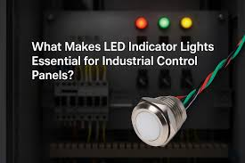

3 ultrasonic sensors detect cars — 6 LEDs show which spaces are free or occupied.
Build a smart parking indicator using HC-SR04 ultrasonic sensors and LEDs to show whether parking spaces are available (green) or occupied (red). This simulates the LED indicator systems used in shopping malls, airports, and smart parking garages.

// Smart Parking Indicator System
const int TRIG1 = 2, ECHO1 = 3;
const int TRIG2 = 4, ECHO2 = 5;
const int TRIG3 = 6, ECHO3 = 7;
const int GREEN1 = 8, RED1 = 9;
const int GREEN2 = 10, RED2 = 11;
const int GREEN3 = 12, RED3 = 13;
const int THRESHOLD = 10;
long getDistance(int trigPin, int echoPin) {
digitalWrite(trigPin, LOW);
delayMicroseconds(2);
digitalWrite(trigPin, HIGH);
delayMicroseconds(10);
digitalWrite(trigPin, LOW);
long duration = pulseIn(echoPin, HIGH, 30000);
if (duration == 0) return 999;
return duration * 0.034 / 2;
}
void updateSpot(long dist, int greenPin, int redPin, int spotNum) {
if (dist < THRESHOLD) {
digitalWrite(greenPin, LOW);
digitalWrite(redPin, HIGH);
} else {
digitalWrite(greenPin, HIGH);
digitalWrite(redPin, LOW);
}
}
void setup() {
Serial.begin(9600);
pinMode(TRIG1, OUTPUT); pinMode(ECHO1, INPUT);
pinMode(TRIG2, OUTPUT); pinMode(ECHO2, INPUT);
pinMode(TRIG3, OUTPUT); pinMode(ECHO3, INPUT);
pinMode(GREEN1, OUTPUT); pinMode(RED1, OUTPUT);
pinMode(GREEN2, OUTPUT); pinMode(RED2, OUTPUT);
pinMode(GREEN3, OUTPUT); pinMode(RED3, OUTPUT);
}
void loop() {
long d1 = getDistance(TRIG1, ECHO1);
long d2 = getDistance(TRIG2, ECHO2);
long d3 = getDistance(TRIG3, ECHO3);
updateSpot(d1, GREEN1, RED1, 1);
updateSpot(d2, GREEN2, RED2, 2);
updateSpot(d3, GREEN3, RED3, 3);
delay(500);
}
Each HC-SR04 sensor sends an ultrasonic pulse and measures how long it takes to bounce back. If an object (car) is detected within 10cm, the space is marked as occupied (red LED). Otherwise the green LED shows the space is free. The system updates every 500ms, simulating a real parking garage display.